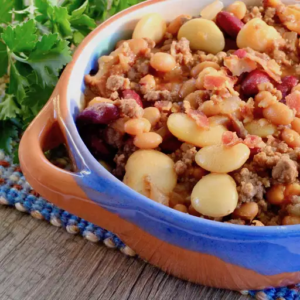

3 Bean Hot Dish

Description
A filling 3 bean hot dish from Minnesota that will feed the entire neighborhoood.
Just combine and bake for an exciting Minnesota warmer.
Ingredients
- ¼ pound bacon
- 1 pound ground beef
- 1 onion, diced
- 1 (15 ounce) can pork and beans, drained
- 1 (15 ounce) can kidney beans, drained
- 1 (15 ounce) can butter beans, drained
- ½ cup ketchup
- ½ cup brown sugar
- 2 tablespoons white vinegar
- 1 tablespoon yellow mustard
Instructions
- Place bacon in a large skillet and cook over medium-high heat, turning occasionally, until evenly browned, about 10 minutes. Drain bacon slices on paper towels. Crumble when cooled. Wipe out skillet with a paper towel.
- Cook and stir ground beef in the hot skillet until browned and crumbly, 5 to 7 minutes. Drain and discard grease. Add onion and cook until clear, about 5 minutes more.
- Combine cooked bacon, cooked beef, pork and beans, kidney beans, butter beans, ketchup, brown sugar, vinegar, and mustard in a slow cooker. Stir to combine. Cook on High until heated through, about 1 hour.